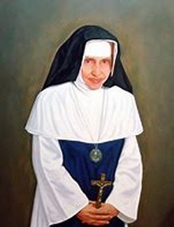
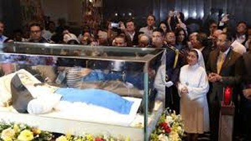
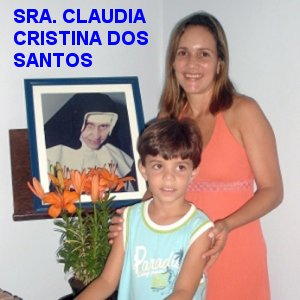
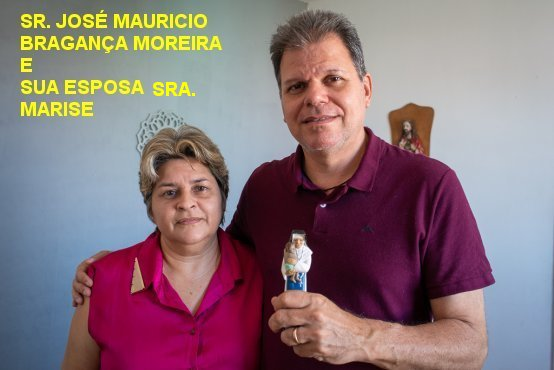

“VOANDO PARA DEUS”

CINQUENTA ANOS DE VIDA RELIGIOSA
No dia 8 de Fevereiro de 1983, foi feita uma celebração simples na Capela do Convento Santo Antonio, para celebrar e comemorar festivamente os 50 anos de vida religiosa da Irmã Dulce. Ajoelhada diante do Padre Franciscano Frei Hildebrando, ela renovou os seus votos de religiosa, fazendo o juramento diante de seu amigo e conselheiro espiritual:
“Eu, Irmã Dulce, celebrando os cinquenta anos de serviço ao SENHOR, renovo meus votos a DEUS, para viver para sempre em castidade, pobreza e obediência, no Espírito do Evangelho, de acordo com a Regra da Ordem Terceira Regular de São Francisco e as Constituições das Irmãs Missionárias da Imaculada Conceição da MÃE DE DEUS. Desejo viver a minha consagração batismal mais profundamente e assim me unir, de modo especial, a Igreja e ao seu Ministério”.
MORTE DA IRMàDULCE

Na Capela do Convento Santo Antonio o corpo de Irmã Dulce foi velado por uma multidão, que chorando, com os olhos cheios de lágrimas, acompanhavam fervorosamente as orações de despedida. Houve a Santa Missa, mas a Capela não tendo dimensões para abrigar todo o povo, a multidão organizadamente acompanhou do lado de fora. No sábado pela manhã uma numerosa procissão, cantando e rezando em todo o trajeto de dez quilômetros, acompanhou a Santa no caixão, conduzida por um veiculo do Corpo de Bombeiros até a Igreja de NOSSA SENHORA DA PRAIA. Lá no adro da Igreja, cavalos e cavaleiros, mendigos doentes e cadeirantes, crianças chorosas e adultos com flores nas mãos, ali aguardavam para se despedirem da “carinhosa mãe”. Foi uma imensa e fervorosa manifestação de amor e de agradecimento! Foram realizadas filas imensas durante todo o dia e Irmã Dulce só foi sepultada na segunda-feira. Ela permaneceu na sepultura até Maio de 2000, quando foi feita a exumação do corpo de acordo com o processo canônico. Hoje, uma relíquia do seu corpo se encontra no Altar Mor da Igreja do SANTO CRISTO.
BEATIFICAÇÃO E CANONIZAÇÃO
O processo para a Canonização da Irmã Dulce, começou a 12 de Julho de 1999. Para a fase Diocesana o Frei italiano Paolo Lombardo foi convidado para ser o Postulador. Em 14 de Agosto de 1999, a CONGREGAÇÃO para as Causas dos Santos, com as primeiras informações chegadas, publicou o “Nihil Obstat” , em que a Santa Sé emitiu um documento afirmando que não existia impedimento para a introdução da causa. E na sequência dos estudos em Abril de 2009 é reconhecida as virtudes heróicas da Irmã Dulce. Em Abril de 2009 é concedido pelo Papa Bento XVI o titulo de “VENERÁVEL” a Irmã Dulce. No dia 09 de Junho de 2010 é realizada a exumação e transferência das relíquias da “VENERÁVEL” para a Capela definitiva na “IGREJA DA IMACULADA CONCEIÇÃO DA MÃE DE DEUS”. No dia10 de Dezembro de 2010 o Papa Bento XVI autorizou o Decreto de “BEATIFICAÇÃO” da Irmã, cuja Festa do acontecimento foi realizada em Salvador na Bahia, no dia 22 de Maio de 2011. Ela foi proclamada “SANTA” sendo “CANONIZADA” no dia 13 de Outubro de 2019, pelo Papa Francisco, numa bonita solenidade no Vaticano, e oficialmente passou a ser chamada de “SANTA DULCE DOS POBRES”.
ALÉM DE MUITOS OUTROS ACONTECIDOS,
DOIS MILAGRES FORAM ESCOLHIDOS 
Dois milagres foram necessários e cientificamente provados: o primeiro com Claudia Cristina dos Santos, em 2011, que recebeu a graça de DEUS de continuar vivendo por intercessão da Irmã Dulce; e o segundo milagre com José Maurício Bragança Moreira, em 2019, que recebeu a sua visão de volta, pela Graça Divina, por intercessão da Santa Irmã Dulce.
No Primeiro Milagre escolhido, a senhora Claudia Cristina dos Santos, residente em Sergipe, no ano de 2001, após dar a luz ao seu segundo filho Gabriel, sofreu uma forte hemorragia que durou 18 horas, sendo ela submetida a três cirurgias na Casa de Saúde e Maternidade São José, em Itabaiana. Perdeu muito sangue e foi desenganada pela equipe médica. Padre José de Almir Menezes perguntou a Claudia: “A senhora conhece a Irmã Dulce e acredita que ela pode salvá-la?” Ela respondeu que sim.“Por isso pedi a Freira que intercedesse pela vida de Claudia”.
O milagre aconteceu! A hemorragia parou, e três dias depois Claudia estava na casa dela. O médico Dr. Sandro Barral, do Hospital Santo Antônio, que integra as Obras Sociais Irmã Dulce, disse que o caso foi analisado por dez peritos brasileiros e seis italianos: “Ninguém conseguiu, do ponto de vista de nossa especialidade, explicar o porquê daquela melhora de forma tão rápida, numa condição tão adversa”.

Às 7 horas da manhã, sua esposa levantou-se e percebeu que ele dormia tranquilamente. Então, como de costume, ela saiu para fazer as compras da casa e remédios para ele. Cerca das 8 horas da manhã, José Mauricio, o baiano que vivia com a família em Recife, acordou. Esfregou os olhos despreguiçando num gesto banal, e o extraordinário aconteceu: “Ele enxergou a sua mão!” Pensou: “Mas como isso é possível?” Assustado, estava alegre, mas com certo medo aproximou as mãos de seus olhos e veio a confirmação: “ele as enxergou com toda nitidez!!!” Uma alegria profunda e exuberante invadiu o seu coração... Sorria e chorava ao mesmo tempo... Estava muito feliz e sinceramente agradecido. Não encontrava meios de mostrar o seu melhor e mais puro agradecimento, e por isso sorria e chorava. Ele havia pedido a Irmã Dulce que conseguisse do SENHOR DEUS, um alívio para a sua conjuntivite que coçava muito e não o deixava dormir. NOSSO SENHOR, misericórdia infinita, atendeu ao pedido da Irmã Dulce e lhe concedeu uma graça muito maior e muito mais especial, curando a conjuntivite e devolvendo a total visão ao José Maurício. Pegou a imagem da Irmã, e num gesto carinhoso a beijou várias vezes em agradecimento pela maravilhosa intercessão, dizendo: “Obrigado querida Irmã! Muito obrigado!” Correu e pegou JESUS Crucificado que estava na parede, segurou o Crucifixo e o beijou com sofreguidão várias vezes dizendo: “Obrigado querido DEUS da minha vida. De joelhos humildemente agradeço ao SENHOR por tanta bondade”! Exuberante de amor, José Maurício buscava modos e idéias para melhor agradecer a DEUS e a IRMàDULCE, quando de repente, percebeu o barulhinho característico do portão, anunciando que sua esposa estava regressando ao lar. Ele correu rapidamente e se escondeu atrás da porta de entrada. Ela quando abriu e entrou, deparou com o seu marido sorridente e vibrante de emoção, com os braços abertos. Não eram necessárias nenhuma explicação. Eles se abraçaram fervorosamente numa exuberante manifestação de agradecimento ao SENHOR DEUS por tanta bondade e imensa misericórdia.